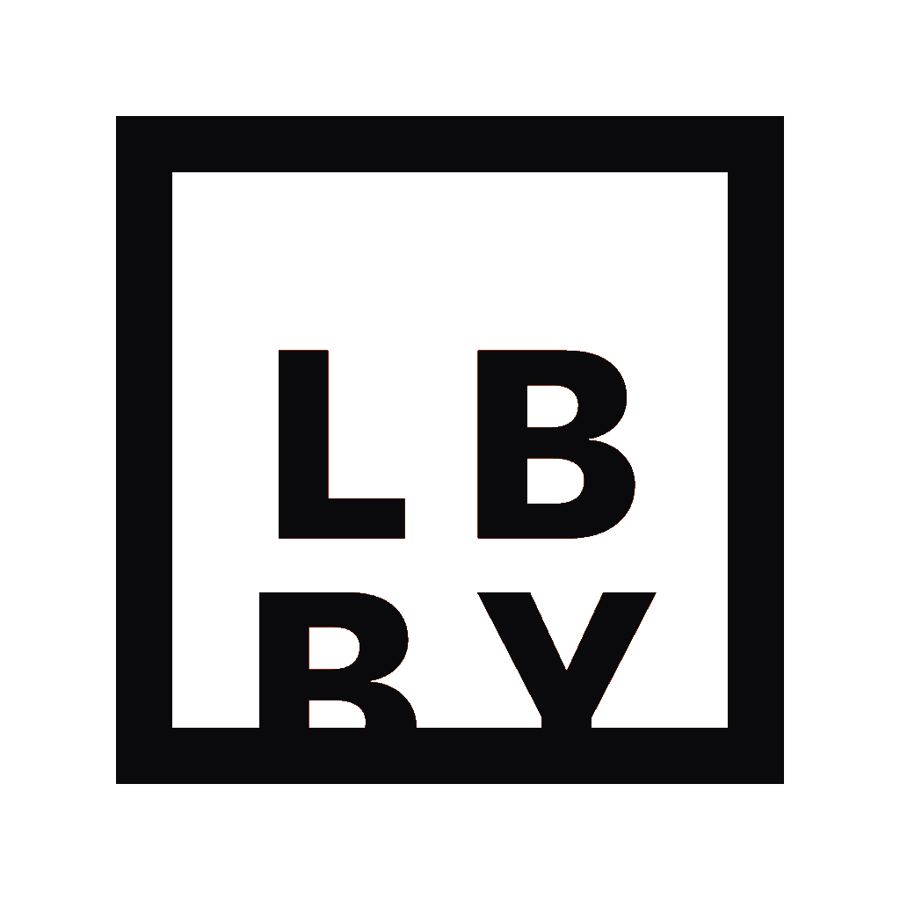

One app to create, manage, and share your Minecraft server. Setup in seconds, play with friends worldwide.
From zero to a running server in under a minute. No terminal, no config files, no headaches.
Pick a server type, choose your version, click Start. Lbby handles Java, ports, and configuration automatically.
Built-in tunneling with playit.gg lets friends join from anywhere — no port forwarding or static IP needed.
Paper, Fabric, Forge, NeoForge, Bukkit, Spigot, Folia, Purpur, SpongeVanilla, SpongeForge, and Vanilla.
Browse and install mods and plugins directly from Modrinth. Auto-updates included.
Real-time server console with command input. Monitor players, TPS, RAM, and CPU from the dashboard.
Manage your server from your phone or another PC. Secure token-based access, optional Cloudflare tunnel.
Available for Windows, macOS, and Linux. Free to use.
Loading releases...
From download to your first server in minutes.
Download the installer for your operating system from the Download section above. Run the installer and follow the prompts.
.msi installer.dmg and drag to Applications.deb, .rpm, or run the .AppImageOpen Lbby and the setup wizard will guide you:
To let friends join over the internet:
Head to the Mods tab to browse Modrinth:
Lbby supports 11 server types. Here's a quick guide:
What's new in Lbby.
Loading changelog...
Join the community or reach out directly.